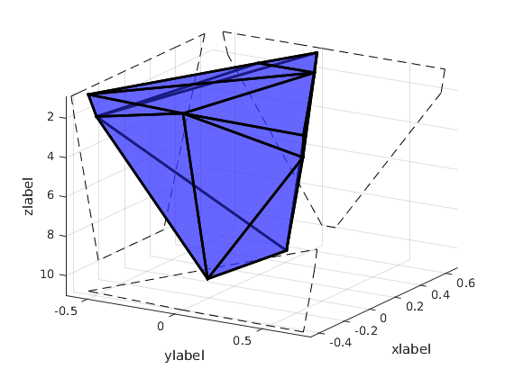

Calculating the boundaries of the wrench feasible workspace
Author : Jordan M. Longval
Contents
Initialising
clear; clc; close all; addpath('/home/jordan/Documents/Memoire_figure_git/3DDL/functions'); % Setting the arbitrary values R = 1; % m r = 0.2; % m alpha = 0; % rad rc = 0.04; % m pc = pi/6; % rad hc = 0.5; % m % Setting the minimum and maximum heigth zmin = 1; % m zmax = 10; % m % Range of values for the external wrench and the mass Mx = [-2 2]; % Nm My = [2 6]; % Nm Mz = [1 1.5]; % Nm fx = [-6 2]; % N fy = [4 8]; % N fz = 0; % N m = 30; % kg % Defining all the possible combinations of wrenches wrench_comb = []; for a = 1:length(fx) for b =1:length(fy) for c = 1:length(fz) for d = 1:length(Mx) for e = 1:length(My) for f = 1:length(Mz) wrench_comb = [wrench_comb;... fx(a),fy(b),fz(c),Mx(d),My(e),Mz(f)]; end end end end end end zr = [zmin,zmax];
Calculating the WFW
[corners,volume,K] = WFW_Calculator(R,r,alpha,rc,pc,hc,m,wrench_comb,zr);
Plotting the whole WFW
fig1 = figure; % plot3(points(:,1),points(:,2),points(:,3),'*r'); points = corners(:,4:6); minx = 1.1*min(points(:,1)); maxx = 1.1*max(points(:,1)); miny = 1.1*min(points(:,2)); maxy = 1.1*max(points(:,2)); axis([minx maxx miny maxy 0.9*zmin 1.1*zmax]) hold on; trh = trisurf(K,points(:,1),points(:,2),points(:,3)); trh.FaceColor = [0.2 0.2 1]; trh.FaceAlpha = 0.5; trh.LineWidth = 2; % Print projections for better view proj_z = [points(:,1),points(:,2),ones(length(points(:,1)),1)*1.1*zmax]; Kpz = convhull(proj_z(:,1),proj_z(:,2)); plot3(points(Kpz,1),points(Kpz,2),1.1*zmax*ones(length(Kpz),1),'k--'); proj_x = [ones(length(points(:,1)),1)*maxx,points(:,2),points(:,3)]; Kpx = convhull(proj_x(:,2),proj_x(:,3)); plot3(maxx*ones(length(Kpx),1),points(Kpx,2),points(Kpx,3),'k--'); proj_y = [points(:,1),ones(length(points(:,1)),1)*miny,points(:,3)]; Kpy = convhull(proj_y(:,1),proj_y(:,3)); plot3(points(Kpy,1),miny*ones(length(Kpy),1),points(Kpy,3),'k--'); set (gca,'Ydir','reverse'); set (gca,'Zdir','reverse'); grid on; xlabel('xlabel'); ylabel('ylabel'); zlabel('zlabel'); view(-59,22); set(gcf,'renderer','Painters') print -dsvg complet1.svg %
Plotting the first step
% Printing the first part (base) % I have to print all of the planes. x = [minx maxx]; fig2 = figure; for i =1:length(planes(:,1)) y = (-1/planes(i,2))*(planes(i,1)*x+planes(i,3)*zmin+planes(i,4)); lh(i)= plot3(x, y, [zmin,zmin],'-k'); hold on; end axis([minx maxx miny maxy 0.9*zmin 1.1*zmax]) set (gca,'Ydir','reverse'); set (gca,'Zdir','reverse'); grid on; xlabel('xlabel'); ylabel('ylabel'); zlabel('zlabel'); view(-59,22); set(gcf,'renderer','Painters') print -dsvg top_lines.svg
% Finding the good points fig3 = figure; proj_z = [points(:,1),points(:,2),ones(length(points(:,1)),1)*zmin]; Kpz = convhull(proj_z(:,1),proj_z(:,2)); plot3(points(Kpz,1),points(Kpz,2),zmin*ones(length(Kpz),1),'*b'); % ph = patch(points(Kpz,1),points(Kpz,2),zmin*ones(length(Kpz),1),[0.2,0.2,1]); % ph.FaceAlpha =0.5; % ph.LineWidth = 2; view(3); axis([minx maxx miny maxy 0.9*zmin 1.1*zmax]) set (gca,'Ydir','reverse'); set (gca,'Zdir','reverse'); grid on; xlabel('xlabel'); ylabel('ylabel'); zlabel('zlabel'); view(-59,22); set(gcf,'renderer','Painters') hold on; t = linspace(zmin-1,zmax+1,10); pii = p_inter_ini; for i =1:length(pii(:,1)) pxy(:,:,i) = [planes(pii(i,1),1) planes(pii(i,1),2);... planes(pii(i,2),1) planes(pii(i,2),2)]\... -[planes(pii(i,1),3)*t+planes(pii(i,1),4);... planes(pii(i,2),3)*t+planes(pii(i,2),4)]; plot3(pxy(1,:,i),pxy(2,:,i),t,'-k'); end
% Finding the points that are on each of the lines % % % From the list of points which was found previously, Determing if the % % planes which give rise to this point intersection with any other planes % tic % for i =1:length(p_inter_ini(:,1)) % for j =1:length(planes(:,1))-2 % if j~=p_inter_ini(i,1) && j~=p_inter_ini(i,2) % temp = calc_plane_intersection(planes(p_inter_ini(i,1),:),... % planes(p_inter_ini(i,2),:),... % planes(j,:)); % if ~isempty(temp) % bool =1; % for h = 1:length(planes(:,1)) % if h~=p_inter_ini(i,1) && h~=p_inter_ini(i,2) && h~=j % valid = (planes(h,1:3)*temp)+planes(h,4)>0; % bool = bool*valid; % end % end % if bool ==1 % n_p_o_l =[n_p_o_l;p_inter_ini(i,1),p_inter_ini(i,2),h,temp']; % end % end % % end % end % end % % % Defining the list of all projection lines at the plane z =zmax % L_l_e = []; % for i =1:length(wrench_comb(:,1)) % L_l_e = [L_l_e;Calc_lines(alpha, R, r, rc, phic, ... % hc,m,zmax,wrench_comb(i,:))];%,... % %rhomax,rhomin,fmin,fmax)]; % end % % % Determining the points on the z=zmin plane which are good. % p_inter_end = []; % for i =1:length(L_l_e(:,1))-1 % for j=i+1:length(L_l_e(:,1)) % temp = Calc_intersection(L_l_e(i,:), L_l_e(j,:)); % bool = 1; % for k =1:length(L_l_e(:,1)) % if k ~= i && k~= j % verif = L_l_e(k,1)*temp(1)+L_l_e(k,2)*temp(2)+L_l_e(k,3) > 0; % bool = bool*verif; % end % end % if bool ==1 % p_inter_end = [p_inter_end;i,j,temp]; % % end % end % end % t2 = toc % vertices = [p_inter_ini(:,3:4),ones(length(p_inter_ini(:,1)),1)*zmin;]; % % if ~isempty(n_p_o_l) % vertices = [vertices;n_p_o_l(:,4:6)]; % end % % if ~isempty(p_inter_end) % vertices = [vertices;... % p_inter_end(:,3:4),ones(length(p_inter_end(:,1)),1)*zmax]; % end % vertices % [K1,v1] = convhulln(vertices); % % hold on; % plot3(vertices(:,1),vertices(:,2),vertices(:,3),'*b'); %%%%%%%%% PLANE METHOD %%%%%%%%%%%%%%%%%%%%%%%%% % % tic % int = []; % count = 0; % for i=1:length(planes(:,1))-2 % for j=i+1:length(planes(:,1))-1 % for k =j+1:length(planes(:,1)) % temp = calc_plane_intersection(planes(i,:),planes(j,:),planes(k,:)); % if ~isempty(temp) % count = count+1; % bool = 1; % for h =1:length(planes(:,1)) % if h~=i && h~=j && h~=k % valid = (planes(h,1:3)*temp)+planes(h,4)>0; % bool = bool*valid; % end % end % if bool == 1 % int = [int;... % i,j,k,temp']; % end % end % end % end % formatSpec = '%3.4f percent complete\n'; % fprintf(formatSpec,(i/(length(planes(:,1))-2))*100); % end % int = sortrows(int,6) % t2 = toc % function [vert, set_new_lines] = branching(ip1,ip2,ntp,planes) vert = []; set_new_lines = []; for i =1:length(planes(:,1))-1 if i ~= ip1 && i ~=ip2 && i~=ntp temp = calc_plane_intersection(planes(ip1,:),... planes(ip2,:),... planes(i,:)); if ~isempty(temp) bool =1; for h = 1:length(planes(:,1)) if h~=ip1 && h~=ip2 && h~=i valid = (planes(h,1:3)*temp)+planes(h,4)>0; bool = bool*valid; end end if bool ==1 vert = [vert;temp']; set_new_lines = [set_new_lines;ip1,i,ip2;ip2,i,ip1]; end end end end end